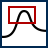
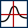
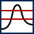
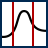

Home
References
Toolbar
Expressions
Time Format
Preferences
Import
Perl Import Filter
Perl Data Filter
Command Line
Inspectors
Macro
Macro Language
Range
Buffer
Control
Interactive
Calculation
Style
Data Style
Axis Style
Legend
Text & Graphic
Document
Miscellaneous
Miscellaneous
Data Views
The right part oft the toolbar switches the different views in the lower right part of the inspector.
 Data Buffer Inspector
Data Buffer Inspector
This inspector controls the data buffers in your document. Each line represents a set of XY data. It is possible to select some buffers and transfer them via copy and paste to another Plot document.
Data Inspector
The Data View is a spreadsheet like editor for your data. It shows the data of the working buffer. Double clicking on the X Value or Y Value column header switches the display format between number and time values. The X Error and Y Error column stores individual error values for each data point. If you select rows in the Data View the points will be highlighted in your document.
Macro editor
Switch to the macro editor.
MySQL import editor
Switch to the MySQL import editor
Inspectors
The left part of the toolbar selects the inspector panes.
General
This inspector controls some general attributes of your document
Data Style Inspector
The Data Style Inspector controls the graphic attributes of each data buffer.
Extra Style Inspector
The Extra Style Inspector controls some advanced style attributes of each data buffer.
Axis Inspector
The Axis Inspector allows settings depending to the 4 available axis. The button at the top of the inspector selects on which axis the attributes below apply to.
Axis Format Inspector
The Axis Format Inspector controls the graphic attributes of the 4 available axis. The button at the top of the inspector selects on which axis the attributes below apply to.
Axis Labels Inspector
The Axis Labels Inspector controls the axis label attributes and allows to assign arbitrary labels instead of the automatically generated numbers. The button at the top of the inspector selects on which axis the attributes below apply to.
Error Bars Inspector
The Error Bars Inspector controls the error bars for your data points.
Legend Inspector
The Legend Inspector sets the attributes for the automatically generated legend. Only buffers with a checked L column in the Data Inspector appears in the legend.
Calculations Inspector
This inspector contains the function generator and the calculator which allows buffer calculations
Normalize Inspector
With this inspector some manipulation of data like moving, normalizing etc. can be done.
Fit Inspector
With this inspector some mathematical manipulation of data can be done.
Text Inspector
This inspector controls the graphical attributes of text objects.
Graphic Inspector
This inspector controls the graphical attributes of graphic objects. Currently lines, arrows, rectangle, and circles are supported.
Mouse Modes
The middle part of the inspector toolbar allows to select different mouse modes. Mouse modes defines the behavior of the mouse in your document.
Select Tool
This mouse mode allows different manipulations on your plot. You can resize the frame of your plot; move and edit texts; select data points which will then highlighted in the data view; change the current working buffer; and select axis. After selection the appropriate inspector appears. If you select a text or graphic object you can use this keys:
| left, right, up, down | move the object |
| control + left, right, up, down | move the 1. graphic object handle |
| option + left, right, up, down | move the 2. graphic object handle |
| backspace | delete the object |
| command+right, command+left | select the next or previous object |
Keyboard shortcut: s
Range
This is for easy navigating through your data. Clicking and moving in the plot changes the range accordingly. If you have a mouse wheel you can also zoom in and out. If you hold the option keys while zooming only the X axis changes. Holding the command key does the same for the Y axis.
Keyboard shortcut: r
 Zoom
Zooming, the plot will be rescaled to the selected rectangle.
Keyboard shortcut: z
Upscale
If you click with this mouse mode inside your plot the clicked point will be centered and the range of the plot will be lowered.
Keyboard shortcut: u
 Downscale
Downscale
If you click with this mouse mode inside your plot the clicked point will be centered and the range of the plot will be increased.
Keyboard shortcut: d
 Measure
This mode allow to measure points and the distance between two points with a crosshair. The result will be shown in the middle part of the inspector. The values will be displayed for both axis and depending on the axis mode as time value or as number.
Keyboard shortcut: m
 Normalize Y
With this mouse mode two reference values on the Y axis can be selected. The values will be used for the normalize inspector.
Keyboard shortcut: b
 Normalize X
With this mouse mode two reference values on the X axis can be selected. The values will be used for the normalize inspector.
Keyboard shortcut: n
Move Y
This mouse mode allows moving of data from all selected buffers in Y direction. This operation changes the data itself and not just the range of the plot.
Keyboard shortcut: y
Move X
This mouse mode allows moving of data from all selected buffers in X direction. This operation changes the data itself and not just the range of the plot.
Keyboard shortcut: x
Move XY
This mouse mode allows moving of data from all selected buffers in X and Y direction. This operation changes the data itself and not just the range of the plot.
Keyboard shortcut: q
Move Points
With this mouse mode you can select and move a single data point. This operation changes the data itself and not just the range of the plot.
Keyboard shortcut: p
Linear Background
Allows to define the reference values for linear background subtraction with the mouse.
Keyboard shortcut: w
Subview
With this mouse mode new empty subviews can be generated.
Keyboard shortcut: h
Change Subview
This mouse mode allows to change the size and position of a subview.
Keyboard shortcut: j
Legend Moving
With this mouse mode the automatically generated legend can be moved.
Keyboard shortcut: l
Graphic
With this mouse mode graphic objects can be created, sized and moved.
Keyboard shortcut: g
Text
This mouse mode allows to add and edit text objects in your plot.
Keyboard shortcut: t
Other
Rescale
Rescales the plot so that every data point is visible.